- Sitting Position and Energy Management Device: An
Arduino-based Solution for Improved Health and Sustainable Electricity
Consumption(Final Thesis)
Details: In this final bachelor's thesis project, we utilized an Arduino board along with ultrasonic sensors, a temperature sensor, a lamp, relay, and LEDs to improve the user's reading and sitting environment. By detecting the user's position with ultrasonic sensors, we prompted them to correct their posture by automatically turning off the lamp using the relay. Moreover, we incorporated a temperature sensor to monitor the environment, and if it became too hot or too cold, we alerted the user through the LEDs. This innovative system provided a comfortable and conducive environment for reading and sitting, enhancing the overall user experience effectively.
Key Instruments: Arduino IDE, Arduino Uno Board, LEDs, DHT11 Module, BH1750 Module, Relay Module, Lamp, Resistances
Related Images:
- Smart Liquid Level Monitoring System with Real-Time
Alerts(Microprocessor Lab)
Details: The STM32F0 board was integrated with an Ultrasonic module to transmit height information. Whenever the height fell below a specified limit, the user received immediate notifications through both an LED indicator and an LCD display, effectively alerting them about the low height condition.
Key Instruments: Keil uVision Software, STM32CubeMx Software, STM32F0 Board, LCD 2*16 Ultrasonic Module
Related Images:
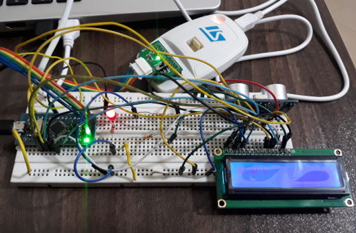
- Web-Based LED Control and Management with Wemos Mini ESP8266
Module(Interface Circiut Lab)
Details: In the Arduino IDE, a user-friendly web page has been crafted, allowing easy control of an LED with the ability to toggle it on and off. The implementation involves utilizing the Wemos mini esp8266 as a wireless access point for seamless communication and efficient LED management. The web page provides a straightforward interface, enabling users to conveniently control the LED's activation and deactivation duration.
Key Instruments: Arduino IDE, Wemos Mini Esp8266 Module
Related Images:
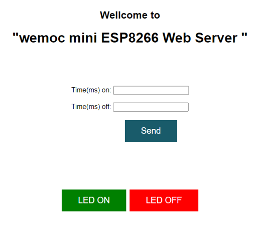 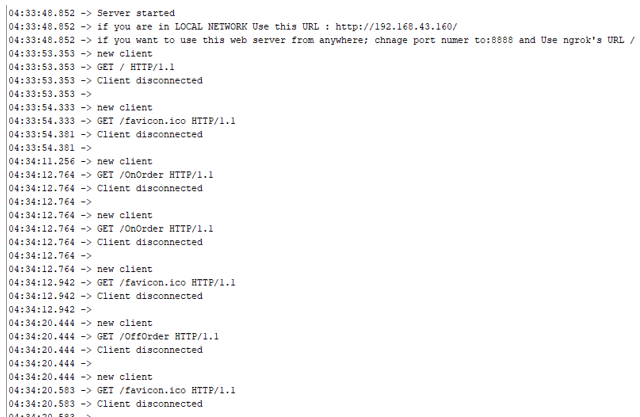
- hardware description for calculating the determinant of matrices
with 3 and higher dimensions and software description for calculating the determinant of 1
and 2 dimensional matrices(Hardware Software Co-Design)
Details: The software description for calculating determinants of 1 and 2-dimensional matrices involved implementing the relevant codes in the C language. As for the hardware description of determinants for matrices with 3 dimensions and above, a control unit was designed as a Finite State Machine (FSM). Subsequently, this FSM was implemented using Ghezel, along with its corresponding DataPath. This approach allowed for efficient computation and representation of determinants, providing a comprehensive solution for both software and hardware implementations.
Key Instruments: Dev C++ IDE ,Ghezel Software
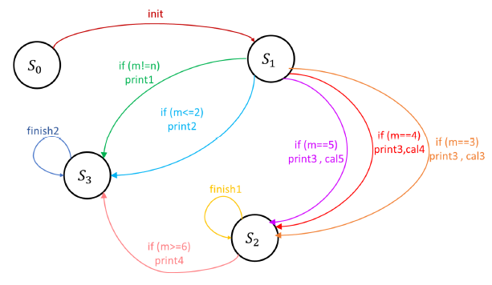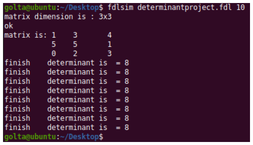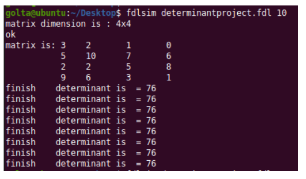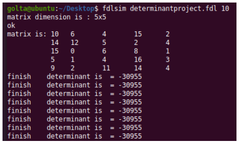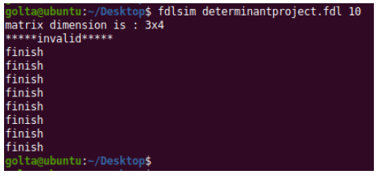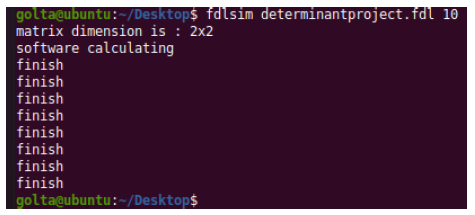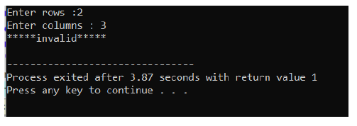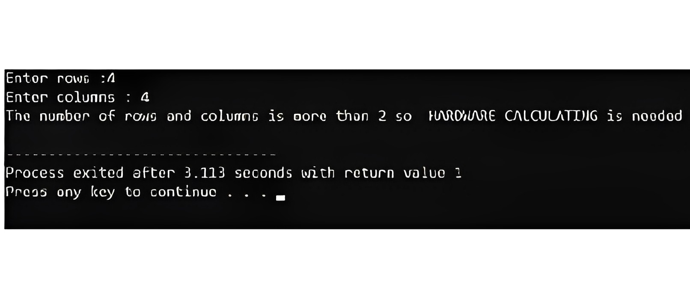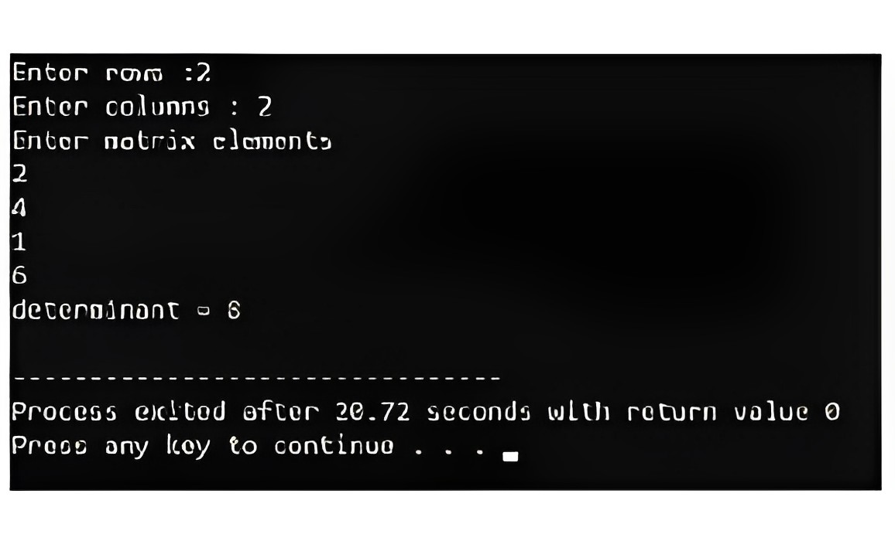
- Simulating the Full Automation of a Production
Line(Industrial Automation Lab)
Details: In this project, we aim to produce raw materials from two sources: green and blue materials. These materials will be merged using the Pop Up Wheel Sorter, forming a combined path leading to the Machining Center machine. The machine transforms these materials into base or lid components, which are then sent through an output path to the Pick & Place device. This device efficiently separates them by color and directs them into two separate paths for storage. The blue lids and bases are stored using Stacker Crane 2, while Stacker Crane 1 handles the storage of the green lids and bases.
Key Instruments: Control IO Section of Factory IO Software
Related Images: